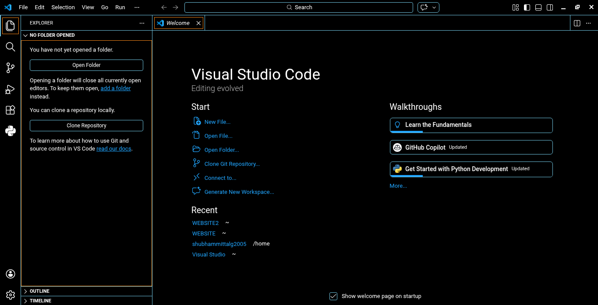

Angular Setup Guide for macOS
Required Software
- Node.js: Angular requires Node.js. You can download it from the official Node.js website.
- Angular CLI: Install the Angular CLI globally using npm (Node Package Manager).
Download Visual Studio Code
Here is the installer matching your operating system.
-
macOS (Universal)
Download VS Code for macOS
Here is how it should look after installation

Installing Angular CLI
Open a terminal and run:
npm install -g @angular/cli
Verifying Installation
After installing Angular CLI, verify the installation by running:
ng version
Basic Lines of Code
Create a new Angular project:
ng new my-angular-app
Conclusion
Congratulations! You have successfully set up Angular on your macOS machine. You can now start creating and running Angular applications. Happy coding!